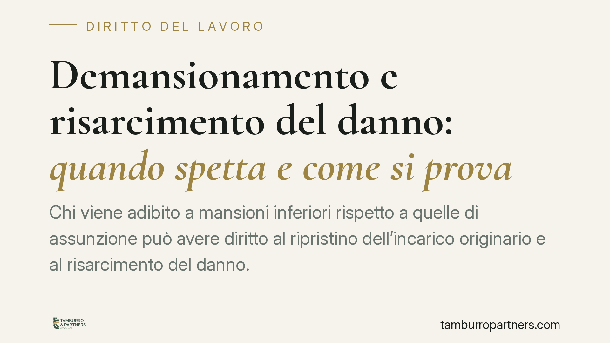

Demansionamento e risarcimento del danno: quando spetta e come si prova
Chi viene adibito a mansioni inferiori rispetto a quelle di assunzione può avere diritto al ripristino dell'incarico originario e al risarcimento del danno. La giurisprudenza distingue però tra riorganizzazione aziendale legittima e demansionamento illegittimo. Vediamo cosa dice l'art. 2103 c.c., quali pregiudizi sono risarcibili e, soprattutto, come si dimostrano in giudizio.

Il caso: mansioni inferiori e richiesta di danni
La domanda è ricorrente: se svolgo compiti dequalificati rispetto a quelli per cui sono stato assunto, ho diritto a un risarcimento? La risposta non è automatica. Occorre distinguere tra una legittima riorganizzazione dell'attività e un vero e proprio demansionamento illegittimo, cioè l'assegnazione a mansioni inferiori fuori dai casi consentiti dalla legge.
La giurisprudenza di legittimità è da tempo orientata a riconoscere, in presenza di demansionamento illegittimo, sia il diritto al ripristino delle mansioni di provenienza sia il risarcimento dei danni concretamente subiti. Non si tratta però di un danno "in re ipsa": va allegato e provato.
Inquadramento normativo: l'art. 2103 c.c.
La disciplina di riferimento è l'art. 2103 del codice civile, come riformulato dal D.Lgs. n. 81/2015. La regola generale è quella dell'equivalenza: il lavoratore deve essere adibito alle mansioni per cui è stato assunto o a mansioni riconducibili allo stesso livello e categoria legale di inquadramento.
Esistono deroghe circoscritte. In caso di modifica degli assetti organizzativi aziendali che incida sulla posizione del lavoratore, l'art. 2103, commi 2 e 4, consente l'assegnazione a mansioni appartenenti al livello di inquadramento inferiore, purché nell'ambito della medesima categoria legale e con conservazione del livello retributivo. Il comma 6 ammette inoltre accordi individuali di modifica delle mansioni, anche in senso inferiore, ma solo se stipulati nelle cosiddette sedi protette (ad esempio davanti alla commissione di conciliazione o in sede sindacale), a tutela dell'occupazione o dell'interesse del lavoratore.
Fuori da questi casi, l'adibizione a mansioni inferiori costituisce inadempimento contrattuale del datore di lavoro.
Quali danni sono risarcibili
Il demansionamento può generare distinte voci di danno.
Danno professionale. È il pregiudizio alla capacità professionale: perdita di competenze, mancato aggiornamento, riduzione delle occasioni di crescita (la cosiddetta perdita di chance). Non richiede necessariamente una prova documentale diretta e può essere accertato anche per presunzioni, valutando durata del demansionamento, natura delle mansioni, età e qualifica del lavoratore.
Danno alla salute. È il pregiudizio all'integrità psico-fisica eventualmente derivato dalla dequalificazione (ad esempio stati ansioso-depressivi). Qui la prova è più rigorosa: occorre dimostrare il nesso causale tra il demansionamento e la patologia, di norma attraverso consulenza tecnica medico-legale.
Le due voci vanno tenute distinte e provate separatamente: la loro sussistenza non si presume in modo generalizzato.
Come si prova il danno
La distinzione operativa è netta. Per il danno professionale il giudice può ricorrere a presunzioni, ma servono elementi concreti da valorizzare: l'evoluzione della mansione nel tempo, il confronto tra compiti precedenti e attuali, l'assenza di ragioni organizzative giustificative. Per il danno alla salute è indispensabile la documentazione clinica e, in giudizio, l'accertamento peritale sul nesso di causa.
È quindi decisivo, fin da subito, costruire una base probatoria solida.
Attenzione ai termini di prescrizione
Il diritto al risarcimento non è azionabile senza limiti di tempo. In termini generali, l'inadempimento contrattuale del datore si prescrive in dieci anni (art. 2946 c.c.), mentre la voce di danno inquadrabile come fatto illecito extracontrattuale segue il termine di cinque anni (art. 2947 c.c.). L'individuazione del termine applicabile dipende dalla qualificazione della domanda e va verificata caso per caso, anche in relazione alla decorrenza.
Cosa fare in concreto
- Documenta le mansioni originarie e quelle attuali: ordini di servizio, mansionari, organigrammi, e-mail, buste paga.
- Conserva ogni evidenza della perdita di responsabilità o del ridimensionamento dei compiti nel tempo.
- Raccogli la documentazione sanitaria se dal demansionamento è derivato un pregiudizio alla salute.
- Contesta per iscritto la dequalificazione al datore, richiedendo il ripristino delle mansioni di provenienza.
- Verifica i termini di prescrizione e, prima di ogni iniziativa, è opportuno rivolgersi a un professionista per la qualificazione della domanda.
---
Contributo informativo a cura di Tamburro & Partners Avvocati. Non costituisce parere legale.
Ogni storia di lavoro ha i suoi tempi.
Se gestisci HR e vuoi un confronto su contenzioso, ispezioni o licenziamenti, scrivi allo studio. Ti rispondiamo entro un giorno lavorativo.